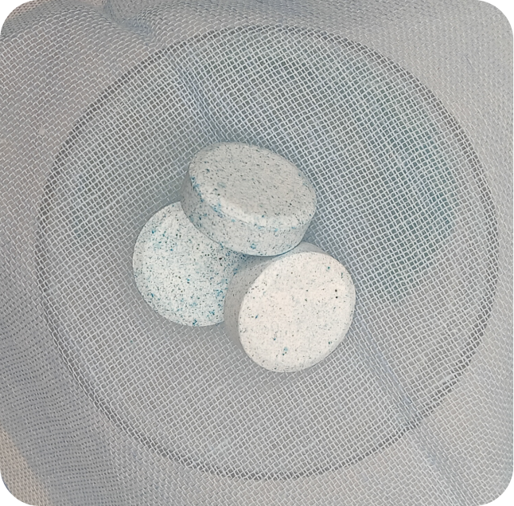

Pil Pembersih Kaca
Menghilangkan noda di kaca, marmer, besi, dan kayu tanpa meninggalkan bekas noda ataupun keputihan. Sangat
rekomendasikan untuk mebel dan properti kesayangan Anda!
Cara Pemakaian :
1. Sediakan botol berisi 1 liter air bersih
2. Ambil dan masukkan 1 buah pil ke dalam botol
3. Tunggu hingga ± 3 menit untuk pil melepaskan kandungan zatnya
4. Setelah itu, Anda dapat membersihkan kaca, marmer, bersi, dan kayu dengan larutan tersebut
3 pil/kemasan untuk 6 bulan